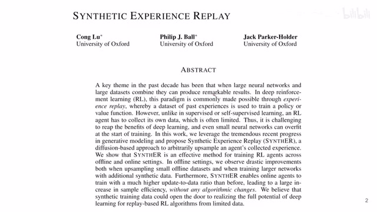
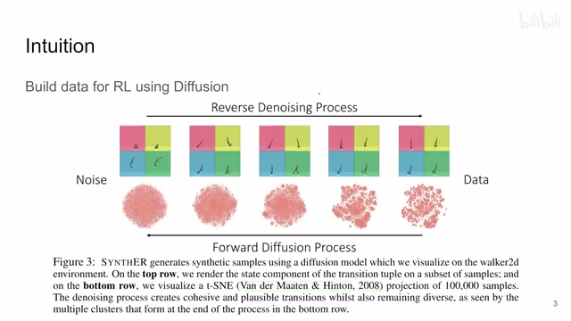
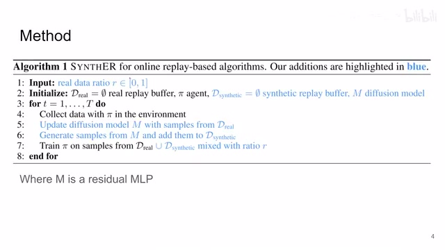
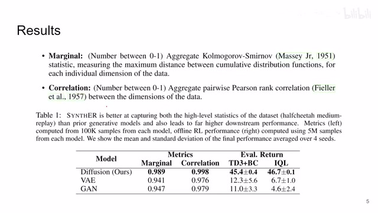
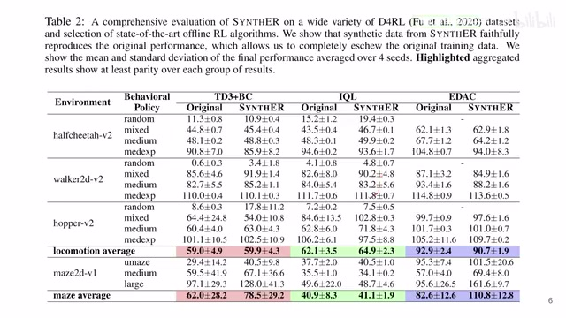
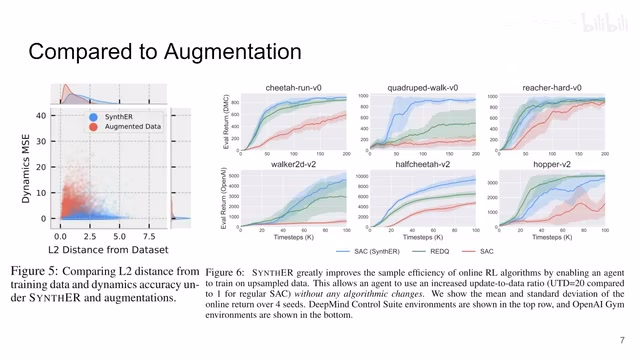
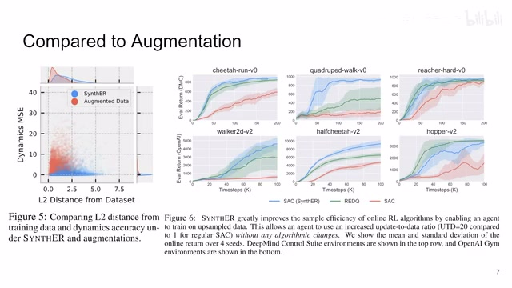

← 返回阅读库 · 原论文目录
论文讲解阅读文档 · 机器人学 · v140
Synthetic Experience Replay[2303.06614]
视频时长 00:02:31；讲解文字 1,208 字符；提取讲解画面 7 张。按视频原顺序阅读，每段文字保留时间戳。
文字来自整段视频的自动语音转写，按自然停顿分段，并与 PPT / 论文页面 / 演示画面对齐。未将讲解压缩为摘要；术语、数字和口述公式请结合画面及原论文核对。 阅读稿已校正规范部分明确术语误识别；原始逐字稿和每处修改记录另行保留。
讲解画面为源视频截图（640×360），不是可编辑 PPT 文件。全片按每秒 2 帧扫描内容变化，逐步展开页保留；连续动画保留代表画面。清晰度受源视频限制。
下载完整资料包 · 含离线 HTML、PDF、Word、全部 PPT 画面和字幕。
原论文与材料
Synthetic Experience Replay · 下载完整 PDF（22 页）
按时间阅读
00:00:00–00:00:14 · 画面 001

00:00:00–00:00:14 · 画面 001大家好啊，今天我们来快速说一篇论文，Synthetic Experience Replay。那么这篇文章呢，是一个非常简单直接的工作，就是用 Diffusion Model 去生成样本，供我们的 Reinforcement Learning 这些东西去学习，就结束了。这里我们看到一个这个插图。
00:00:14–00:00:54 · 画面 002

00:00:14–00:00:54 · 画面 002首先他们做的不是视觉啊，是他们直接能够拿到那个系统的数值的那种状态的那种样的这个 reinforcement learning。那熟悉 diffusion 的朋友对吧，这个是反向的这个 denoising 的过程，这是前向的这个加 noise 的过程。你可以看到，如果这个 state 是完全的这个 gaussian noise 对吧，这里用这个 tsne 给它画出来，就是完全的这种 gaussian noise。你可以看到这个状态乱七八糟的，那随着这个 denoising 的过程进行呢对吧，我们的样本逐渐变得更加真实，然后呢你可以看到。
然后你可以看到这个数据 distribution 在不断的变化。作者说这种生成样本，第一质量高，第二它有 diversity。那么当然这个方法实现起来也是非常简单的。你如果是做 offline 的情况下，你就直接用你已经有的数据集去学就好了。如果你是 online 的方法，随着收集样本随着去学习，你设置一个比例。
00:00:54–00:01:48 · 画面 003

00:00:54–00:01:48 · 画面 003就是我用多大的比例去使用真实的数据，我用多大的比例去使用我们生成的数据对吧。一样的你在线把你的这个生成器这个 diffusion model 给它训练好，然后呢用生成的样本和实际的样本一起来给它做训练就好了。那么还是因为在这里做着直接操作的是这个数值的这个空间，所以用一个带残差的这个 MLP 就可以了。那么很简单的一个思路你甚至可以说它是介于 model free 和 model-based reinforcement learning 之间的这么一个东西它虽然没法像一个正经的 model 一样在 condition 的情况下给你处理各种东西但是它是 uncondition 的直接生成一堆样本来你觉得还是这么一回事那么本文主要的 argument 两点第一个就是对吧我生成的样本首先质量高比用 VAE 用 GAN 这些东西生成的样本质量高能够改善我们后面的 policy learning 这些性能
00:01:48–00:01:59 · 画面 004

00:01:48–00:01:59 · 画面 00400:01:59–00:02:08 · 画面 005

00:01:59–00:02:08 · 画面 005包括这里也是你的 policy learning 这一块，你不用改，你就直接用 diffusion 多生成点样本加进去就好了。这也是作者的 argument。同时作者还说，我用这种模型生成出来的样本比你直接单纯的暴力的去加这个 augmentation，它是跟我们真实的样本分布更像的。那么感兴趣的朋友可以去看他具体的实验配置好的。那么以上就是我对这个论文的一个快速的，甚至都不能叫整理了，就是告诉你有这么一个事情，非常直白的一篇工作。
00:02:08–00:02:31 · 画面 006

00:02:08–00:02:31 · 画面 006那么感谢您的收看，再见。
00:02:31–00:02:31 · 画面 007

00:02:31–00:02:31 · 画面 007转写与来源说明 · 0 个自动复核提示
保留 7 个原始语音片段，0 个片段触发自动复核提示。提示仅用于定位可能的术语、重复或识别问题，不等于已确认错误。
讲解画面为源视频截图（640×360），不是可编辑 PPT 文件。全片按每秒 2 帧扫描内容变化，逐步展开页保留；连续动画保留代表画面。清晰度受源视频限制。
原视频：paper/合集_2026-10-16_机器人学/[论文速览]Synthetic Experience Replay[2303.06614].mp4
SHA-256：b262238b4be309f7ad691b1dd626b46f8e81180350533cdcb5a5b4e9accadb1f
全文按视频语音与画面制作。原论文可从上方链接下载；完整资料包保留全文、原始逐字稿、字幕和校对记录。